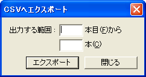

時刻表ビューの内容を、『時刻表CSVファイル』にエクスポート(変換して出力)することができます。
これにより、OuDiaで作成した時刻表データを、表計算ソフト等を使ってデザイン・編集することができます。
また、出力した『時刻表CSVファイル』を、OuDiaにインポートする(変換して読み込む)こともできます。
1. [時刻表ビュー] を開いた状態で、メニュー[ファイル]-[時刻表CSVファイル]-[CSVへエクスポート]
を選択してください。
→[CSVへエクスポート] ダイアログが開きます。

2. [CSVへエクスポート] ダイアログ
出力したい列車の範囲を ○本目から ○ 本 の形式で入力して、[エクスポート]
を押してください。
範囲を指定しない場合は、すべての列車を『時刻表CSVファイル』に出力します。
→[名前をつけて保存]ダイアログが開きます。
3. [名前をつけて保存]ダイアログ
『時刻表CSVファイル』のファイル名を指定して、[保存] ボタンを押してください。
→[時刻表CSVファイル]が、指定したファイル名で保存されます。
→[名前をつけて保存] ダイアログは閉じられ、[CSVへエクスポート] ダイアログに戻ります。
4. CSVへのエクスポートが終了したら、[CSVへエクスポート] ダイアログの [閉じる]ボタンを押してください。
１． [時刻表ビュー] を開いた状態で、メニュー[ファイル]-[時刻表CSVファイル]-[CSVからインポート]
を選択してください。
→[ファイルを開く] ダイアログが開きます。
２．[ファイルを開く] ダイアログ
インポートする『時刻表CSVファイル』を選択して、[開く]ボタンを押してください。
→ 時刻表ビューのフォーカスセルの位置に、『時刻表CSVファイル』に保存されている列車が追加されます。